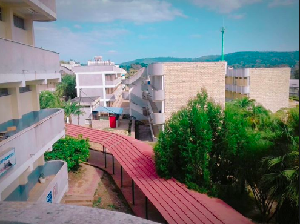
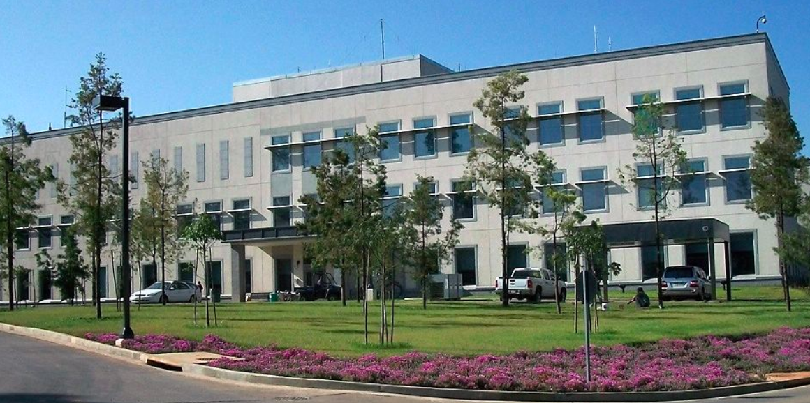
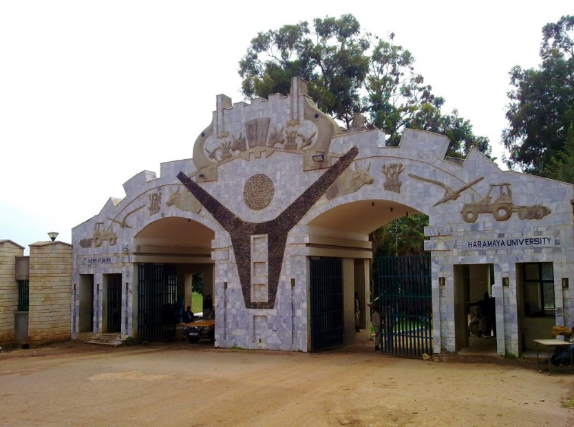
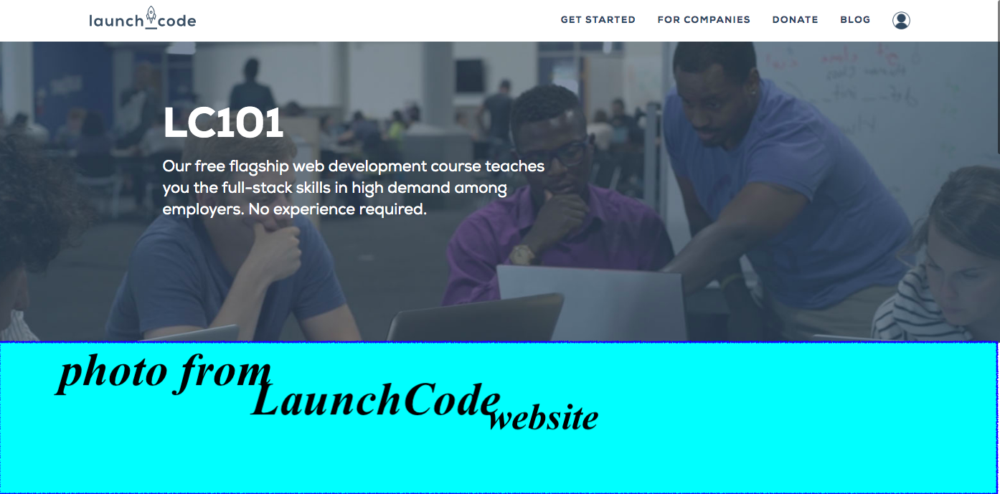
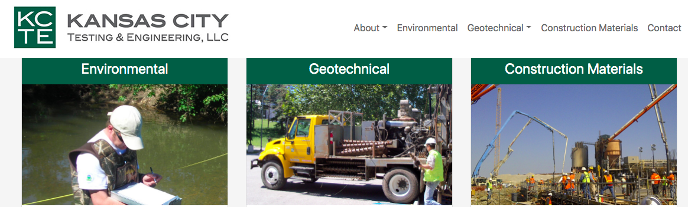

Where I born?
My name is Ibrahim originally from East Africa,Ethiopia at a village
called Haro
specifically here on google map. I have three
sisters and two brothers. I am the youngest in the family.When I was 1 ½ years old my father died.
Haro (a village where I was born ) is a rural part of Ethiopia where electricity is not available.Still
now my mother lives there and uses firewood for cooking


 photos from southEthiopia
photos from southEthiopia
Education
In 2000G.C I enrolled in grade one. I attend from grade one to grade six
at Taye
elementary school which is approximately 1.5mile(30 minutes walk) from my home.But when I completed
grade six ;there is no school near our village ,except Lemi secondary school(which I attended grade
seven and grade eight ) which is approximately 3mile(an hour walk) away from home.
When I joined grade nine ,it was impossible to walk everyday to school from my home.So I have to live
nearby the school (Wegedi high school) But every weekend and every break time I go home to help my
family (farming ,cattleing).
Below in the table you can see my educational flow.
|
class Grade/Field of study |
school Name |
year of attend |
approximately distance from home |
|
1-6 |
Taye elementary school |
Sep 2000 to June 2005 |
1.7mile |
|
7-8 |
Lemi elementary and Secondary school |
Sep 2005 to June 2007 |
3.2mile |
|
9-10 |
Wegedi Hightschool |
Sep 2007 to June 2009 |
7mile |
|
11-12 |
Kelela Highschool |
Sep 2009 to June 2011 |
12mile |
|
Civil engineering |
Haramaya University |
Sep 2011 to June 2015 |
650mile |
|
Maintenance technician |
Potoma Job Corb |
Sep 2015 to Nov 2016 |
|
|
web Development |
LaunchCode |
Sep 2020 to current |
|
In 2014 I won the diversity lottery to come to the USA while I was
studying Civil engineering at
Haramaya University. Haramaya University is located here on map. After I win it takes me a year to
complete the required process (Ds260 and other forms , interview at USA Embassy;Addis Ababa,Ethiopia).
2015 May 3 long flight was done ,from Ethiopia to Washington Dc. It took 17 hours.
Currently I'm studying javascript at LaunchCode since june 2020. “ LaunchCode is an organization helping
people learn to code, land a job, or hire tech talent. LaunchCode is a nonprofit offering free tech
education and job placement opportunities to bring new people from all backgrounds into the tech field
and reshape the way employers think about hiring 86% of LaunchCoders Begin their career without a degree
in computer science.”



Photo from Haramaya University

photo from launchCode website
work
Currently I live in Kansas City Missouri(moved from Maryland to Kansas City in 2017)
and work at Kansas City testing and engineering (KCTE) as a lab technician.Before I start working at
KCTE since 2018,December 31;I was working at Kansas City international airport as a mechanic for the
city of Kansas City.

Photo from kansas City testing & engineering website